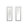

<!DOCTYPE HTML>
<!--
WebAudioPlayer - Basically a basic test of the Web Audio API
©2021 Keian Rao <keian.rao@gmail.com>

This program is free software: you can redistribute it and/or modify
it under the terms of the GNU General Public License as published by
the Free Software Foundation, either version 3 of the License, or
(at your option) any later version.

This program is distributed in the hope that it will be useful,
but WITHOUT ANY WARRANTY; without even the implied warranty of
MERCHANTABILITY or FITNESS FOR A PARTICULAR PURPOSE.  See the
GNU General Public License for more details.

You should have received a copy of the GNU General Public License
along with this program.  If not, see <https://www.gnu.org/licenses/>.
-->

<HTML>

	<META CHARSET="utf-8" />
	
	<DIV ID="vue">
		<FILE-IO @LOAD="audiofile = $event"></FILE-IO>
		<PLAYER :AUDIOFILE="audiofile"></PLAYER>
	</DIV>

	<SCRIPT SRC="/usr/share/javascript/vue/vue.js"></SCRIPT>
	<SCRIPT>
		// For once, I'm going to be using 'let' instead of 'var'.
		
		Vue.component('file-io', {
			template: `
				<div class="file-io">
					<button class="load" @click="fileInput.click()">
						{{ loadLabel }}
					</button>
				</div>
			`,
			data: function() {
				const fileInput = document.createElement("input");
				fileInput.setAttribute('type', "file");
				fileInput.addEventListener('change', this.fileLoad);
				
				return {
					loadLabel: "Open local audio file",
					fileInput: fileInput
				};
			},
			methods: {
				fileLoad: function() {
					this.$emit('load', this.fileInput.files[0]);
					this.fileInput.value = this.fileInput.defaultValue;
				}
			}
		});
		
		Vue.component('player', {
			props: [ 'audiofile' ],
			template: `
				<div class="player">
					<!-- We need some sort of seek. -->
					<!-- Sans album art? -->
					<button class="stop" @click="stop"
							:disabled="this.audioContext == null">
						</img>
					</button>
					<button class="pause" @click="pause" v-if="playing">
						</img>
					</button>
					<button class="resume" @click="play"
							:disabled="this.audioContext == null"
							v-else>
						</img>
					</button>
					<!--
					We will probably use images in stead, later.
					-->
				</div>
			`,
			data: function() {
				return {
					audioContext: null,
					audioSourceNode: null,
					playing: false
				};
			},
			methods: {
				initAudioSystem: function() {
					this.audioContext = new AudioContext();
				},
				initAudio: function() {
					this.audiofile.arrayBuffer()
						.catch(this.arrayBufferFetchFail)
						.then(this.audioDataDecode)
						.catch(this.audioDataDecodeFail)
						.then(this.connectAudio);
				},
				arrayBufferFetchFail: function(error) {
					window.alert(error);
				},
				audioDataDecode: function(arrayBuffer) {
					return this.audioContext.decodeAudioData(arrayBuffer);
				},
				audioDataDecodeFail: function(error) {
					window.alert(error);
				},
				connectAudio: function(decodedData) {
					let src = this.audioContext.createBufferSource();
					src.buffer = decodedData;
					
					let dst = this.audioContext.destination;
					src.connect(dst);
					this.audioSourceNode = src;
					
					src.start();
				},
				pause: function() {
					this.audioContext.suspend();
					this.playing = false;
				},
				play: function() {
					if (this.audioSourceNode == null) this.initAudio();
					
					this.audioContext.resume();
					this.playing = true;
				},
				stop: function() {
					this.pause();
					if (this.audioSourceNode != null) {
						this.audioSourceNode.stop();
						this.audioSourceNode = null;
					}
				}
			},
			watch: {
				"audiofile": function() {
					if (this.audioContext == null) this.initAudioSystem();
					/*
					* It's better to init in the 'mounted' lifecycle hook,
					* but Chromium disallows instantiating an AudioContext
					* before the first user gesture. So we have to lazily
					* create it.
					*
					* (And since I presently can't grab child elements of
					* this component to go and remove the 'disabled' attribute,
					* we have a v-bind:disabled on our player buttons, just
					* for this situation of the audio system never having
					* been initialised.)
					*/
				
					this.stop();					
					this.play();
				}
			}
		});
		
		/*
		Vue isn't exactly like Qt.. we can't seem to arbitrarily connect
		events between components. Not even having the parent component be
		a controller of its children solves it, because how do we get
		references to those rendered child components..?
		
		The component template has a root element, but if you grab that
		(e.g. using document.getElementsByClassName), it's just a DOM element,
		it's not the Vue instance with the data and methods backing it.
		
		Reading on the matter, it seems like props and events are both
		used for one-way data communication. And that they're indeed
		the normal way. And, if I want to run code with side effects
		upon a property change, I should use watchers..
		*/
		
		new Vue({
			el: "#vue",
			data: {
				audiofile: null
			}
		});
	</SCRIPT>
	
	<STYLE>
		html {
			height: 100%;
			background: linear-gradient(#E0E0E0, white);
		}
		
		#vue {
			text-align: center;
		}
		
		.file-io {
			padding: 8px;
			margin: 4px auto;
		}
		
		.player {
			padding: 8px;
			margin: 4px auto;
		}
	</STYLE>

</HTML>
